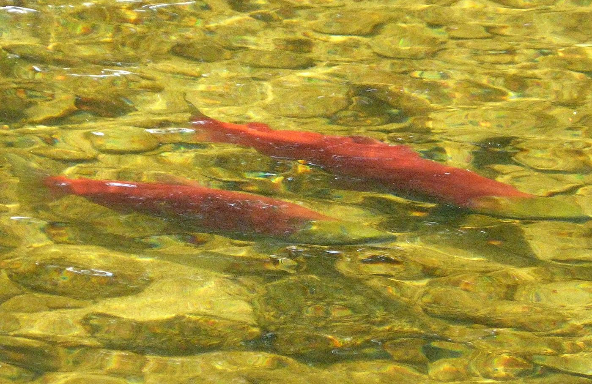

Hereditary Chief Gwininitxw, Yvonne Lattie
Gitxsan hereditary chief — defending the upper Skeena’s salmon waters and the laws of the land that protect them.

Watershed Heroes
Our Local Watershed Heroes series shines a spotlight on the people defending the waters they care about — from farmers to physicians to business owners to Indigenous stewards weaving age-old wisdom into modern-day conservation.
Gitxsan hereditary chief — defending the upper Skeena’s salmon waters and the laws of the land that protect them.
Rancher, Columbia Valley — proof that agriculture and watershed stewardship pull the same wagon. “Farmers can’t keep reliving the same drought emergency year after year.”
Medical Health Officer, Cowichan Valley — because watershed health is public health.
Former Chief, Splatsin/Shuswap Nation — a lifetime of leadership for the Shuswap’s salmon and waters.
Professional biologist — restoring the small streams where endangered species hang on.
Water well driller, Cowichan Valley — the man who knows what’s happening underground, and rang the alarm on unlicensed groundwater use.
Brewmaster, Yellow Dog Brewing Co. — good beer starts with protected water, and he says so loudly.
Director, Cowichan Valley Regional District — local government leadership for a river the whole region depends on.
Read the full profiles on the Watershed Heroes archive.
Every community has one: the neighbour who plants the banks, counts the fry, challenges the permit, drives the water truck. Nominate them and we’ll help tell their story.